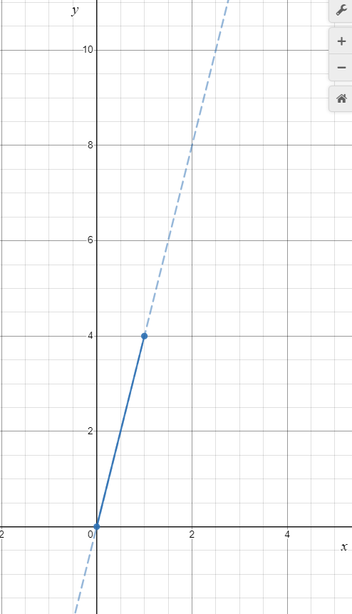

Jonathan Crofts
Nottingham Trent University
Compute the JNF of the matrix
\[ A = \begin{bmatrix}10&-1\\16&2\end{bmatrix} \]Compute the characteristic polynomial
\[ \begin{align*} \chi_A(t)&=\begin{vmatrix}10-t&-1\\16&2-t\end{vmatrix}\\ &=(10-t)(2-t)+16\\ &= t^2-12t+36 = \color{red}{\boxed{\color{white}{ (t-6)^2}}} \end{align*} \]Thus $\lambda=6$ with AM=2
We need to compute the eigenspace so we solve
\[ (A-6I_2)\mathbf{u}=\mathbf{0} \implies \begin{bmatrix}4&-1\\16&-4\end{bmatrix}\mathbf{u}=\mathbf{0} \]This is equivalent to $4u^{(1)}-u^{(2)}=0$
Setting $u^{(2)}=4\alpha$ we get that $u^{(1)}=\alpha$ and so the eigenspace is
\[ \Biggl \{ \alpha\begin{bmatrix}1\\4\end{bmatrix} : \alpha\in\mathbb{R} \Biggr \} \] The GM=1
We need to find a generalised eigenvector $\mathbf{v}$
In the 2 by 2 case we know that $\displaystyle \mathrm{Ker}\left[(A-6I_2)^2\right]=\mathbb{R}^2$
We are free to choose $\mathbf{v}$ to be any vector not in the $\lambda$-eigenspace
Let us set
\[ \mathbf{v} = \begin{bmatrix}1\\0\end{bmatrix} \]To get a related eigenvector we set $\mathbf{u}$ equal to
\[ \mathbf{u} = (A-6I_2)\mathbf{v} = \begin{bmatrix}4&-1\\16&-4\end{bmatrix}\begin{bmatrix}1\\0\end{bmatrix} = \begin{bmatrix}4\\16\end{bmatrix} \]So that $\displaystyle \color{red}{\boxed{\color{white}{ P=\begin{bmatrix}\mathbf{u}&\mathbf{v}\end{bmatrix} = \begin{bmatrix}4&1\\16&0\end{bmatrix}}}}$
It is an exercise to check that $\displaystyle P^{-1}AP=\begin{bmatrix}6&1\\0&6\end{bmatrix} = J_2(6)=J$
Compute the JNF of the matrix
\[ A = \begin{bmatrix}5&-1&-3\\1&2&-1\\1&0&1\end{bmatrix} \]Compute the characteristic polynomial
\[ \begin{align*} \chi_A(t)&=\begin{vmatrix}5-t&-1&-3\\1&2-t&-1\\1&0&1-t\end{vmatrix}\\ &=\begin{vmatrix}-1&-3\\2-t&-1\end{vmatrix}+(1-t)\begin{vmatrix}5-t&-1\\1&2-t\end{vmatrix}\\ &=-t^3+8t^2-21t+18\implies \color{red}{\boxed{\color{white}{t^3-8t^2+21t-18 = (t-3)^2(t-2) = 0}}} \end{align*} \]Thus $\lambda_1=2$ with an AM=1 and $\lambda_2=3$ with an AM=2
The $\lambda_1$-eigenspace is found by solving
\[ (A-2I_3)\mathbf{u}_1=\mathbf{0}\implies \begin{bmatrix}3&-1&-3\\1&0&-1\\1&0&-1\end{bmatrix}\mathbf{u}_1=\mathbf{0} \]We see immediately that $u_1^{(1)}=u_1^{(2)}=\alpha$ and that $u_1^{(3)}=0$ giving
\[ \Biggl \{ \alpha\begin{bmatrix}1\\0\\1\end{bmatrix} : \alpha\in\mathbb{R} \Biggr \} \]The $\lambda_2$-eigenspace is found by solving
\[ (A-3I_3)\mathbf{u}_2=\mathbf{0}\implies \begin{bmatrix}2&-1&-3\\1&-1&-1\\1&0&-2\end{bmatrix}\mathbf{u}_2=\mathbf{0} \implies \begin{bmatrix}1&0&-2\\0&1&-1\\0&0&0\end{bmatrix}\mathbf{u}_2=\mathbf{0} \]So $u_2^{(3)}=u_2^{(2)}=\alpha$ and $u_2^{(1)}=2\alpha$
The $\lambda_2$-eigenspace is
\[ \Biggl \{ \alpha\begin{bmatrix}2\\1\\1\end{bmatrix} : \alpha\in\mathbb{R} \Biggr \} \]And so $\lambda_2=3$ has a GM=1<2=AM
We need to find a generalised eigenvector $\mathbf{v}$ such that
\[ (A-3I_3)\mathbf{u}=\mathbf{0} \quad\text{and}\quad (A-3I_3)\mathbf{v}=\mathbf{u} \]To do this we find $\displaystyle \mathrm{Ker}\left[(A-3I_3)^2\right]$, that is, the solution space of $\displaystyle (A-3I_3)^2\mathbf{v}=\mathbf{0}$
Now
\[ \quad(A-3I_3)^2 = \begin{bmatrix}0&-1&1\\0&0&0\\0&-1&1\end{bmatrix}\implies \begin{bmatrix}0&-1&1\\0&0&0\\0&0&0\end{bmatrix}\begin{bmatrix}v^{(1)}\\v^{(2)}\\v^{(3)}\end{bmatrix} = \mathbf{0} \]So that $v^{(3)}=v^{(2)}=\alpha$ and $v^{(1)}=\beta$ giving $\color{red}{\boxed{\color{white}{\mathbf{v}=\begin{bmatrix}\beta &\alpha & \alpha\end{bmatrix}^T}}}$
The generalised eigenspace is
\[ \Biggl \{ \alpha\begin{bmatrix}0\\1\\1\end{bmatrix}+\beta \begin{bmatrix}1\\0\\0\end{bmatrix} : \alpha, \beta\in\mathbb{R} \Biggr \} \]Clearly, the $\lambda_2$-eigenspace lies within the generalised space given above
Next we need to pick a generalised eigenvector that is not an eigenvector
Let
\[ \mathbf{v}=\begin{bmatrix}1\\0\\0\end{bmatrix} \implies \mathbf{u}=\begin{bmatrix}2&-1&-3\\1&-1&-1\\1&0&-2\end{bmatrix}\begin{bmatrix}1\\0\\0\end{bmatrix} = \begin{bmatrix}2\\1\\1\end{bmatrix} \]So that
\[ \color{red}{\boxed{\color{white}{ P = \begin{bmatrix}\mathbf{u}_1&\mathbf{u}&\mathbf{v}\end{bmatrix} = \begin{bmatrix}1&2&1\\0&1&0\\1&1&0\end{bmatrix} }}} \]Compute the JNF of the matrix
\[ A = \begin{bmatrix}0&1&2\\0&0&3\\0&0&0\end{bmatrix} \]Compute the characteristic polynomial
\[ \begin{align*} \chi_A(t)&=\begin{vmatrix}t&-1&-2\\0&t&-3\\0&0&t\end{vmatrix}\\ &= \color{red}{\boxed{\color{white}{ t^3}}} \end{align*} \]Thus $\lambda=0$ with an AM=3
Let us compute the corresponding eigenspace
\[ (A-\lambda t)\mathbf{u}=0 \implies \begin{bmatrix}0&1&2\\0&0&3\\0&0&0\end{bmatrix}\begin{bmatrix}u^{(1)}\\u^{(2)}\\u^{(3)}\end{bmatrix}=0 \]Thus $u^{(3)}=u^{(2)}=0$ and $u^{(1)}=\alpha$ so that the $\lambda$-eigenspace is
\[ \color{red}{\boxed{\color{white}{ \Biggl \{ \alpha\begin{bmatrix}1\\0\\0\end{bmatrix} : \alpha\in\mathbb{R} \Biggr \} }}} \]The GM=1
Let us look at the generalised eigenspace given by
\[ A^2\mathbf{v}=\mathbf{0}\implies \begin{bmatrix}0&0&3\\0&0&0\\0&0&0\end{bmatrix}\begin{bmatrix}v^{(1)}\\v^{(2)}\\v^{(3)}\end{bmatrix}=0 \quad \text{or}\quad \color{#00FF00}{\boxed{\color{white}{\Biggl \{ \alpha\begin{bmatrix}1\\0\\0\end{bmatrix}+\beta\begin{bmatrix}0\\1\\0\end{bmatrix} : \alpha\in\mathbb{R} \Biggr \}}}} \]We still require another generalised eigenvector so we consider
\[ A^3\mathbf{w}=\mathbf{0} \]By CH we know that $A^3=0$ so the above equation is satisfied for all $\mathbf{w}\in\mathbb{R}^3$
That is
\[ \color{red}{\boxed{\color{white}{ \mathrm{Ker}\left[A^3\right] = \mathbb{R}^3 }}} \]We choose $\mathbf{w}$ so that it does not lie in $\displaystyle\mathrm{Ker}\left[A^2\right]$, say
\[ \mathbf{w}=\begin{bmatrix}0\\0\\1\end{bmatrix}\implies \mathbf{v} = \begin{bmatrix}0&1&2\\0&0&3\\0&0&0\end{bmatrix}\begin{bmatrix}0\\0\\1\end{bmatrix} = \begin{bmatrix}2\\3\\0\end{bmatrix} \implies \mathbf{u} = \begin{bmatrix}0&1&2\\0&0&3\\0&0&0\end{bmatrix}\begin{bmatrix}2\\3\\0\end{bmatrix} = \begin{bmatrix}3\\0\\0\end{bmatrix} \]Thus
\[ \color{#00FF00}{\boxed{\color{white}{ P = \begin{bmatrix}\mathbf{u}&\mathbf{v}&\mathbf{w}\end{bmatrix} = \begin{bmatrix}3&2&0\\0&3&0\\0&0&1\end{bmatrix} }}} \]